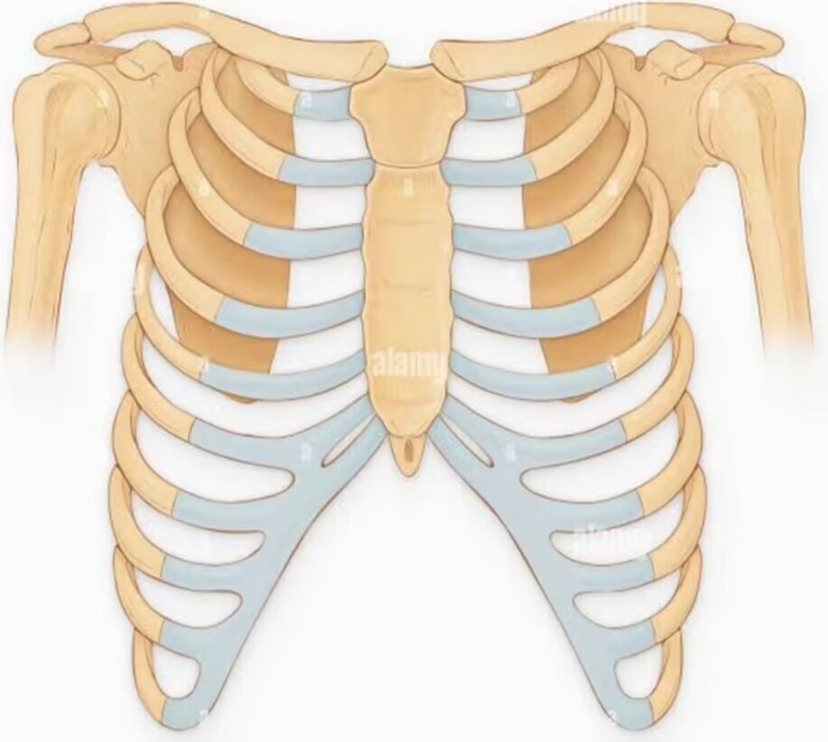

Características
Los pulmones son órganos vitales para la respiración en los seres humanos. Algunas de sus características son que están ubicados en el pecho, tienen una forma cónica y están protegidos por las costillas.
